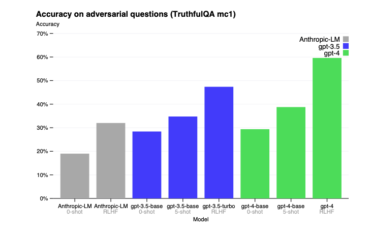
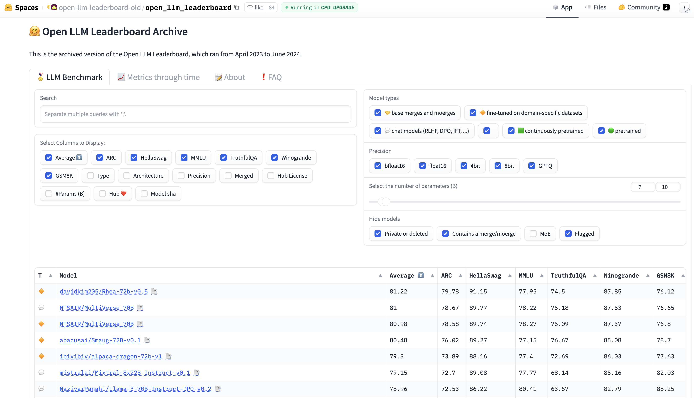
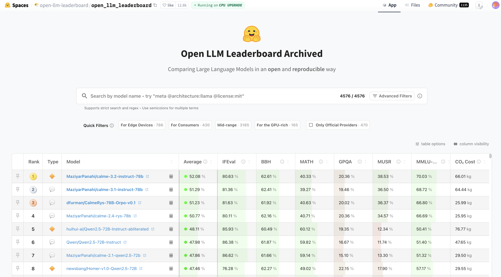

大模型的评估与选择#
在完成实践项目时，选择模型是一个较为重要的过程，本部分将分享：
使用通用评估框架
使用领域数据进行测评
评估框架#
较为知名的有：
模型选择#
构建还是购买决策（Build versus Buy Decision）
过滤掉那些在关键属性上不符合你要求的模型。
你的关键属性列表主要取决于你的内部政策，例如你是希望使用商业API还是自行部署模型。
公共基准测试与排行榜（Public Benchmarks and Leaderboards）
利用公开可用的信息（如基准测试性能和排行榜排名）来筛选出最有潜力的模型进行实验。
在模型质量、延迟和成本等不同目标之间找到平衡。
私有提示与指标（Private Prompts and Metrics）
使用自有的评估流程进行特定任务的实验，以找到最适合的模型。
继续平衡所有关键目标：模型质量、成本与延迟、易用性。
在线监控（Monitoring）
持续监控生产环境中的模型，进行在线评估。
监测模型的失败情况，并收集反馈以改进你的应用。

常见数据集#
ARC（AI2推理挑战）#
简介：
ARC（AI2 Reasoning Challenge）是一个由人工智能研究所（AI2）创建的多项选择题数据集，旨在评估模型在科学推理和常识理解方面的能力。
官方网站：
AI2 ARC 数据集
示例问题：
哪种陈述正确描述了月球的物理特征？
A. 月球由炽热的气体组成。
B. 月球表面布满了许多陨石坑。
C. 月球上有大量液态水体。
D. 月球能够自行发光。
答案：B
HellaSwag#
简介：
HellaSwag 是一个用于评估模型常识推理能力的数据集，包含了需要模型理解复杂细节并完成段落的任务，测试模型生成符合上下文的文本延续的能力。
官方网站：
HellaSwag 数据集
示例问题：
一个人正在切西红柿。他将切片放在盘子上，然后……
A. ……把盘子扔掉。
B. ……将它们作为沙拉的一部分端上来。
C. ……把盘子放进水槽。
D. ……离开厨房。
答案：B
MMLU（大规模多任务语言理解）#
简介：
MMLU（Massive Multitask Language Understanding）是一个新的基准测试，旨在通过零样本和少样本设置评估模型的预训练知识。它涵盖了 STEM、人文、社会科学等领域的 57 个学科，测试模型在广泛主题领域的理解和推理能力。
官方网站：
MMLU GitHub 仓库
示例问题：
法国大革命开始于哪一年？
A. 1789
B. 1776
C. 1804
D. 1815
答案：A
开源模型和闭源模型在MMLU数据集上的表现：

来源：@maximelabonne (X)
TruthfulQA#
简介：
TruthfulQA 是一个基准测试，旨在评估语言模型生成真实信息的能力，避免产生错误或误导性的信息。它包含了一系列容易引发模型产生似是而非回答的问题，测试模型提供真实准确答案的能力。
官方网站：
TruthfulQA GitHub 仓库
示例问题：
人可以在没有大脑的情况下生存吗？
答案：不，人大脑是所有身体功能和意识的关键，无法在没有大脑的情况下生存。
以下是 GPT-4 在 TruthfulQA 数据集上给出正确和错误回答的示例

GPT-4 在 TruthfulQA 上的表现

GPT-4 在零样本提示（zero-shot prompting）、少样本提示（few-shot prompting）以及经过 RLHF（人类反馈强化学习）微调后的表现。
Winogrande#
简介：
Winogrande 是一个大规模的常识推理数据集，基于 Winograd Schema Challenge，包含 44,000 个问题，测试模型在句子中理解上下文和指代消解的能力。
官方网站：
Winogrande 数据集
示例问题：
市议员拒绝给示威者发放许可证，因为他们担心暴力事件。谁担心暴力事件？
A. 市议员
B. 示威者
答案：A
GSM8K（小学数学 8K）#
简介：
GSM8K 是一个包含 8,500 道高质量、小学数学推理问题的数据集。它专门用于测试模型的数学推理能力，要求模型进行多步推导并得出准确答案。
官方网站：
GSM8K GitHub 仓库
示例问题：
一列火车以每小时 60 英里的速度行驶 3 小时。它行驶了多远？
答案：180 英里
HG旧榜单#
上方数据集都有各自的榜单，Hugging Face 也提供了汇总的榜单：🤗 Open LLM Leaderboard Archive

该榜单是2023-2024的结果，已存档，2024年10月，HG发布了V2的榜单。
Hugging Face排行榜上使用的六个基准之间的相关性（2024年1月计算的）。

IFEval（指令遵循评估）#
简介：
IFEval（Instruction-Following Evaluation）用于测试大语言模型（LLMs）在遵循自然语言指令方面的能力。它通过一系列任务评估模型的指令理解、任务执行以及合理性，如回答问题、生成文本或执行复杂操作。
来源：Instruction-Following Evaluation for Large Language Models

示例问题：
Write a resume for a fresh high school graduate who is seeking their first job. Make sure to include at least 12 placeholder represented by square brackets, such as [address], [name]. （为一位刚毕业于高中的学生撰写一份简历，他们正在寻找第一份工作。确保包含至少12个由方括号表示的占位符，例如 [address]、[name]。）
BBH（Big Bench Hard）#
简介：
BBH（Big Bench Hard）是 Big Bench 的一个子集，包含 23 个具有挑战性的任务，涉及推理、常识理解、数学、语言学等领域。它测试模型在面对高难度任务时的推理能力，尤其是多步骤推理（chain-of-thought）。
来源： Challenging BIG-Bench Tasks and Whether Chain-of-Thought Can Solve Them
示例问题：
如果所有猫都会爬树，而爬树的动物都喜欢高处，那么以下哪项陈述是正确的？
A. 所有喜欢高处的动物都会爬树。
B. 不是所有的动物都会爬树。
C. 只有猫才喜欢高处。
D. 只有喜欢高处的动物才会爬树。
答案：B
MATH（数学挑战）#
简介：
MATH 评估模型在数学推理和解题方面的能力，涵盖代数、几何、概率、数论等多个数学领域。该基准测试要求模型提供详细的推理过程，而不仅仅是答案。
来源： Measuring Mathematical Problem Solving With the MATH Dataset
示例问题：
解方程：5x - 3 = 2x + 6
答案：x = 3
GPQA（通用问答）#
简介：
GPQA（General Purpose Question Answering）数据集包含来自不同学科的高难度多项选择题，如生物学、物理学、历史和化学。许多问题即使是专家回答正确率也不高，因此该测试能够有效衡量模型的知识水平和推理能力。
来源： GPQA: A Graduate-Level Google-Proof Q&A Benchmark
示例问题：
以下哪种生物不属于哺乳动物？
A. 海豚
B. 企鹅
C. 蝙蝠
D. 大象
答案：B
MuSR（多步软推理）#
简介：
MuSR（Multistep Soft Reasoning）主要测试模型在复杂推理问题中的表现，特别是需要多个逻辑步骤才能得出正确答案的任务。这类问题通常要求模型记住多个条件，并依次推导出最终结论。
来源： MuSR: Testing the Limits of Chain-of-thought with Multistep Soft Reasoning
示例问题：
在一场侦探调查中，A、B 和 C 是主要嫌疑人。已知：
A 和 B 互相认识，而 C 不认识 A。
只有一个人说谎，B 说“C 是凶手”。
A 说“B 在撒谎”。
请推理出真正的凶手是谁？
MMLU-Pro（大规模多任务语言理解-专业版）#
简介：
MMLU-Pro（Massive Multitask Language Understanding - Professional）是 MMLU 数据集的改进版本，涵盖多个高难度学科领域。与原版 MMLU 不同，MMLU-Pro 通过增加选项数量、调整问题难度，并减少数据噪声，使得测试更具挑战性。
来源： MMLU-Pro: A More Robust and Challenging Multi-Task Language Understanding Benchmark
示例问题：
在19世纪，哪位作家的作品最能反映现实主义文学风格？
A. 托尔斯泰
B. 雨果
C. 爱伦·坡
D. 弗吉尼亚·伍尔夫
答案：A
CO₂ Cost（碳排放成本）#
简介：
CO₂ Cost 衡量模型在推理计算过程中产生的碳排放量，以 千克（kg） 为单位。 该指标反映了模型计算所需的能源消耗，数值越高表示模型的计算开销更大，对环境的影响也更显著。
计算方法：
def calculate_co2_emissions(total_evaluation_time_seconds: float | None) -> float:
if total_evaluation_time_seconds is None or total_evaluation_time_seconds <= 0:
return -1
# 8 个 NVIDIA H100 SXM GPU 的功耗（千瓦）
power_consumption_kW = 5.6
# 弗吉尼亚州每千瓦时的碳强度（克 CO₂）
carbon_intensity_g_per_kWh = 269.8
# 将评估时间转换为小时
total_evaluation_time_hours = total_evaluation_time_seconds / 3600
# 计算能耗（千瓦时）
energy_consumption_kWh = power_consumption_kW * total_evaluation_time_hours
# 计算二氧化碳排放量（克）
co2_emissions_g = energy_consumption_kWh * carbon_intensity_g_per_kWh
# 将克转换为千克
return co2_emissions_g / 1000
新榜单#
这些基准测试综合评估大语言模型在指令遵循、数学推理、专业知识、多步推理以及环境可持续性方面的表现，为研究人员提供了重要的对比数据。
新榜单地址：Open LLM Leaderboard Archived

RoleLLM 评价指标#
在评估大型语言模型（LLMs）的角色扮演能力时，RoleLLM 框架引入了三个基于 Rouge-L 的指标：RAW、CUS 和 SPE。这些指标分别用于评估模型在模仿说话风格、回答准确性以及捕获特定角色知识方面的表现。
评价指标：
RAW（Role-specific Answering with Writing style）
此指标评估模型在特定角色背景下的回答质量和写作风格模仿能力。通过计算模型生成的回答与角色特定回答之间的 Rouge-L 分数，衡量模型在角色扮演中的表现。CUS（Character Understanding Score）
该指标衡量模型对角色特定知识的理解程度。通过比较模型的回答与角色相关知识的重合度，评估模型在捕捉和应用角色特定知识方面的能力。SPE（Speaking Style Emulation）
此指标评估模型模仿特定角色说话风格的能力。通过计算模型生成文本与角色典型说话风格之间的相似度，衡量模型在语言风格模仿方面的表现。
来源：RoleLLM: Benchmarking, Eliciting, and Enhancing Role-Playing Abilities of Large Language Models
其他数据集#
法律 LegalBench
医疗 MedQA
阅读理解：NarrativeQA | OpenBookQA
数据污染#
数据污染在公共基准测试中非常普遍，常被称为数据泄漏、在测试集上训练，或简单地说是作弊。当模型在与其评估相同的数据上进行训练时，就会发生数据污染。这样，模型可能只是记住了训练期间看到的答案，导致其评估得分高于应有水平。例如，一个在MMLU基准上训练的模型可能在MMLU得分上表现很高，但实际用途不大。
斯坦福大学的博士生Rylan Schaeffer在其2023年的讽刺论文 Pretraining on the Test Set Is All You Need 中对此进行了精彩的展示。通过专门在多个基准测试的数据上进行训练，他的一个百万参数模型能够取得近乎完美的分数，并在所有这些基准上超越了更大的模型。
数据污染的原因#
数据污染的发生方式。虽然有些人可能会故意在基准数据上训练，以获得误导性的高分，但大多数数据污染是无意的。
如今，许多模型是基于从互联网抓取的数据进行训练的，而在抓取过程中，可能会无意间收集到来自公开基准的数据。在模型训练之前发布的基准数据很可能会被包含在模型的训练数据中。这也是现有基准测试迅速饱和的原因之一，并且促使模型开发者不断创建新的基准测试来评估他们的新模型。
数据污染还可能间接发生，例如当训练数据和评估数据来自相同的来源时。举个例子，你可能会在训练数据中加入数学教材，以提高模型的数学能力，而另一个人可能会使用相同数学教材中的题目来创建基准测试，以评估该模型的数学能力。
此外，数据污染也可能是有意为之，并且出于合理的目的。假设你希望为用户打造一个最优的模型，最初你可能会将基准数据排除在训练数据之外，并基于这些基准来选择最佳模型。然而，由于高质量的基准数据能够提升模型的性能，你可能会在最终模型发布前，使用这些基准数据对其进行进一步训练。因此，最终发布的模型已经被污染，用户将无法再使用受污染的基准来评估它，但这仍然可能是正确的做法。
如何应对数据污染#
数据污染的普遍存在削弱了评估基准的可信度。仅仅因为一个模型在律师资格考试中表现良好，并不意味着它擅长提供法律咨询。这可能只是因为该模型在训练时学习了大量律师资格考试的题目。
要应对数据污染，首先需要检测污染情况，然后进行数据去污染处理。可以使用启发式方法来检测污染，例如 n-gram 重叠 和 困惑度（perplexity） 计算：
n-gram 重叠 例如，如果评估样本中的某个 13 个 token 序列 也出现在训练数据中，则表明模型在训练时可能见过这个评估样本，因此这个评估样本被视为“脏数据”。
困惑度（Perplexity） 困惑度衡量的是模型预测给定文本的难度。如果一个模型在评估数据上的困惑度异常低，意味着它很容易预测这些文本，那么很可能它在训练过程中已经见过这些数据。
对比方法： n-gram 重叠方法的准确性更高，但需要消耗大量计算资源，因为它需要将每个基准测试样本与整个训练数据进行对比，因此如果无法访问训练数据，就无法使用该方法。而困惑度方法虽然准确性较低，但计算成本更低。
过去，机器学习教材建议从训练数据中移除评估样本，以保持基准测试的标准化，从而可以对不同模型进行公平比较。然而，在基础模型（Foundation Models）时代，大多数人无法控制训练数据。即使可以控制训练数据，我们也可能不会完全移除基准测试数据，因为高质量的基准数据能够提高模型的整体性能。此外，基准测试往往是在模型训练完成后才创建的，因此污染的评估样本始终存在。
对于模型开发者而言，一个常见做法 是在训练模型之前，从训练数据中移除他们关心的基准测试数据。理想情况下，在报告模型的基准测试性能时，应披露该基准测试数据中有多少比例存在于训练数据中，以及模型在整个基准测试集和“干净”样本上的表现。然而，由于检测和去除污染需要额外的工作量，许多人选择跳过这一步。
数据污染的实例： OpenAI 在分析 GPT-3 训练数据中的基准污染时发现，有 13 个基准测试数据集中至少 40% 存在于训练数据中（Brown et al., 2020）。在 仅使用干净样本评估 与 使用整个基准评估 之间的性能差异，见下图：

应对数据污染的方法： 为了应对数据污染，排行榜平台（如 Hugging Face）通常会绘制模型在某一基准测试上的 标准差，以识别异常情况。此外，公共基准测试应保持一部分数据私有，并提供工具，使模型开发者可以自动针对这些私有数据评估模型。
公共基准测试可以帮助筛选出不合格的模型，但无法帮助找到最适合应用的模型。因此，在使用公共基准缩小模型范围后，仍需要运行自定义评估流程来挑选最优模型。如何设计自定义评估流程，将是接下来的讨论主题。
成本与速度#
在评估大型语言模型（LLM）时，平衡模型质量、延迟和成本至关重要。虽然高质量的输出是目标，但如果模型运行缓慢且成本高昂，其实用性将大打折扣。因此，许多公司可能选择质量稍低但在成本和延迟方面更具优势的模型。
成本：对于使用模型API的用户，费用通常按生成的标记数量计算，输入和输出的标记越多，成本越高。因此，许多应用尝试减少输入和输出标记的数量以控制成本。对于自行托管模型的用户，主要成本在于计算资源。为了充分利用现有硬件资源，通常选择能在硬件上运行的最大模型。例如，GPU通常具有16 GB、24 GB、48 GB和80 GB的内存，因此许多流行的模型参数数量设计为适应这些内存配置。
延迟：延迟不仅取决于底层模型，还与每个提示和采样变量有关。自回归语言模型通常逐个生成Token，生成的Token越多，总延迟越高。可以通过精心设计提示词（例如，指示模型简洁作答）或设置生成的停止条件来控制用户感知的总延迟。
平衡：在优化多个目标时，明确哪些目标可以妥协，哪些不可以至关重要。例如，如果延迟是不可妥协的因素，应首先根据延迟期望筛选模型，排除不符合延迟要求的模型，然后在剩余模型中选择最佳者。这种方法类似于项目管理中的“铁三角”原则，即范围、时间和成本三者之间的权衡。
一个示例的要求如下：
标准 |
指标 |
基准 |
硬性要求 |
理想情况 |
|---|---|---|---|---|
成本 |
每输出标记的成本 |
X |
<$30.00 /百万标记 |
<$15.00 /百万标记 |
规模 |
TPM（每分钟处理的标记数） |
X |
>100万 TPM |
>100万 TPM |
延迟 |
Time to First Token（P90） |
内部用户提示数据集 |
<200毫秒 |
<100毫秒 |
延迟 |
Time per total query（P90） |
内部用户提示数据集 |
<1分钟 |
<30秒 |
整体模型质量 |
Elo 得分 |
Chatbot Arena 排名 |
>1200 |
>1250 |
代码生成能力 |
pass@1 |
HumanEval |
>90% |
>95% |
事实一致性 |
内部 GPT 指标 |
内部幻觉数据集 |
>0.8 |
>0.9 |
Elo 评分系统是一种用于衡量选手或团队相对技能水平的评价方法，最初由匈牙利裔美国物理学家阿尔帕德·埃洛（Arpad Elo）为国际象棋比赛设计。如今，该系统被广泛应用于各种竞技领域，包括围棋、足球、篮球以及电子竞技等。Elo评分系统通过比较双方当前评分计算预期胜率，并根据实际比赛结果调整评分，从而逐步反映出选手的真实实力。
Pass@1 是一种用于评估代码生成模型性能的指标，衡量模型在第一次尝试时生成正确代码的概率。